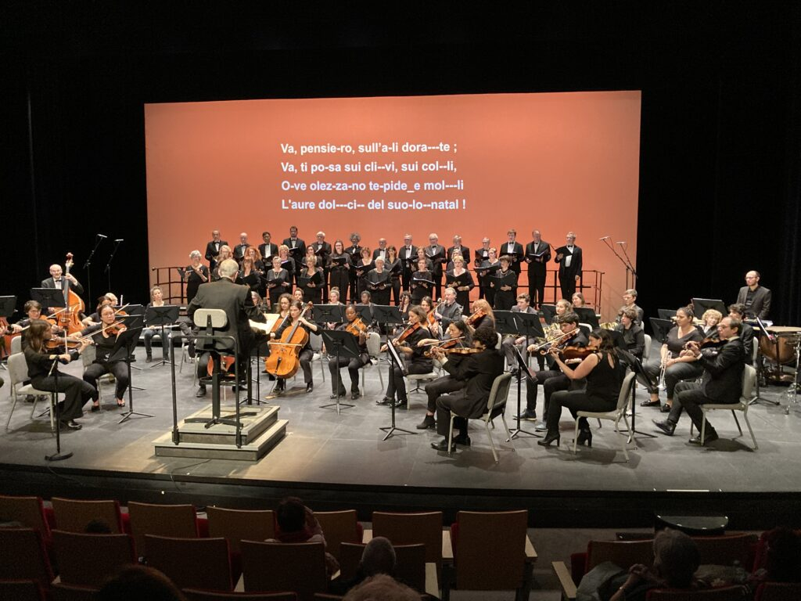
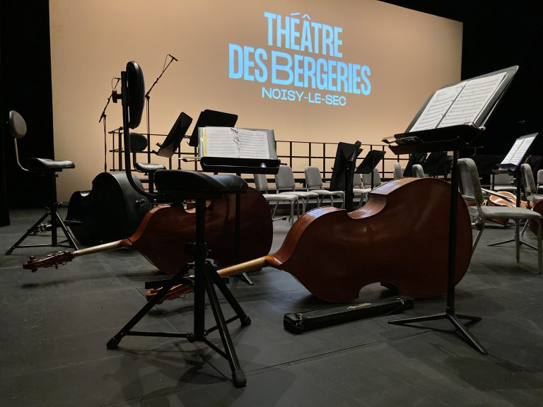
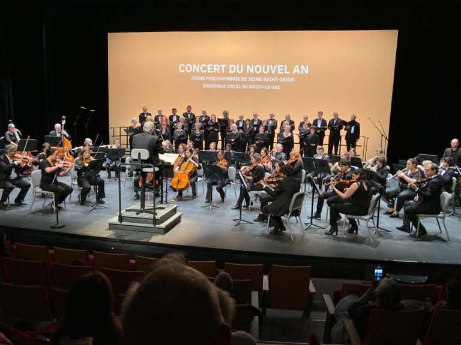

Ensemble vocal de Noisy-le-Sec
Choranoisy est une chorale d'adultes qui travaille le répertoire classique et les chants traditionnels internationaux — avec, parfois, la chance de chanter accompagnée d'un orchestre.
Nos prochains concerts
Dates à venir pour la saison 2026 – 2027.
Nos concerts passés



Vous souhaitez nous rejoindre ?
Les répétitions ont lieu le jeudi soir, de 19h30 à 21h30 sauf pendant les vacances scolaires, au Conservatoire Nadia et Lili Boulanger de Noisy-le-Sec, 41 rue Saint-Denis.